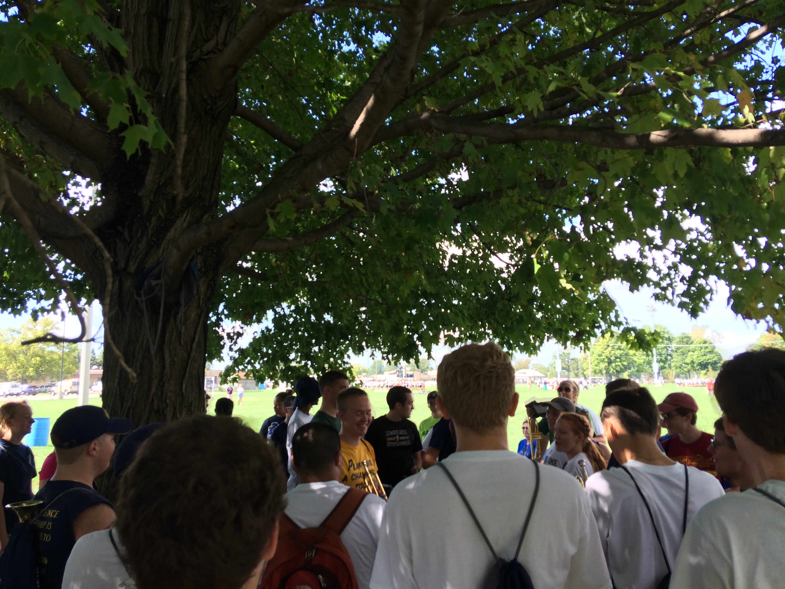

Tradition
'til the end of time
The Notre Dame Band includes students from accross the United States and around the world. The Notre Dame Victory March was first performed in 1908. The March, composed by John and Michael Shea (Notre Dame students), has become one of the most recognized, and copied college fight songs ever. In a recent evaluation of the nation's greatest fight songs, USA Today ranked Notre Dame's as the Best College Fight Song in existence! In a recent Harris Poll, the Notre Dame football team was also ranked as the most recognizable, and revered college football team. The Notre Dame Band includes students from accross the United States and around the world. The Notre Dame Victory March was first performed in 1908. The March, composed by John and Michael Shea (Notre Dame students), has become one of the most recognized, and copied college fight songs ever. In a recent evaluation of the nation's greatest fight songs, USA Today ranked Notre Dame's as the Best College Fight Song in existence! In a recent Harris Poll, the Notre Dame football team was also ranked as the most recognizable, and revered college football team. 
The Notre Dame Band includes students from accross the United States and around the world. The Notre Dame Victory March was first performed in 1908. The March, composed by John and Michael Shea (Notre Dame students), has become one of the most recognized, and copied college fight songs ever. In a recent evaluation of the nation's greatest fight songs, USA Today ranked Notre Dame's as the Best College Fight Song in existence! In a recent Harris Poll, the Notre Dame football team was also ranked as the most recognizable, and revered college football team.

follow us, if you dare